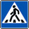
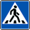

Правила дорожного движения

5.19.1 — Пешеходный переход

5.19.2 — Пешеходный переход
При отсутствии на переходе разметки 1.14.1 или 1.14.2 знак 5.19.1 устанавливается справа от дороги на ближней границе перехода, а знак 5.19.2 - слева от дороги на дальней границе перехода.